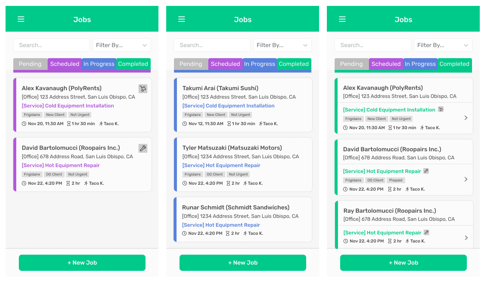

Roopairs Design System
Fall 2020–Winter 2021 // Roopairs Product Design

New Roopairs design system elements.
Skills: Color, Typography, WCAG, Figma, CSS, HTML, React.
Team: Myself
Overview
I designed and implemented a color system to improve the usability of an app at a startup company. As their product design intern, I brought this project from research, design, to implementation.
The User Problem
Users struggled to see the interface under outdoor glare.

The Original UI
Through research I learned about W3C’s Web Content Accessibility Guideline and its color contrast standards. I measured the color contrast of our UI using a Figma plugin, to find that most of our UI elements did not pass the AA standards.
The original color palette was handpicked by an old intern’s aesthetic sense, without consideration of contrast ratios or usability. The result was a pastel color palette that looked good on its own, but incompatible for use on UI.
The Solution
To solve this issue, we need a design system that establishes a design language that makes the app usable and accessible. In order to build a design system, we first needed a color system.
So we set our goal to build a well-balanced, accessible color system to deisgn with more harmonious tones and improve usability and accessibility of our app.
Requirements
Before designing and documenting the color system, I had to first understand what makes a color system effective. Who is it for? What should it include? How should it be documented? I searched across the internet to elevate my knowledge in this field.
Through several reliable medium.com articles I learned about the best practices with building a color system. I also studied ServiceTitan and MailChimp’s design systems to learn from the artifacts crafted by professional UX teams. I made sure to fully research and understand this topic before I build one myself.
Here are the core features we laid out for our upcoming color system:
- Include tints and shades specified by “x00” weights.
- Document meaning and usage of each color.
- Usages pass WCAG color contrast standards.
- Include do's and do-not's of color usages.
- Keep it minimal and leave room for future designers to carefully scale up.
Designing the Color Palette
First, I used Material design's color tool to generate an accessible set of balanced colors. Since yellow and orange do not produce enough contrast, they were impossible to generate on the accessible color palette. We should come up with an accessible interface without those colors, so I created a few prototypes that do not require us to use yellow or orange.
Screen prototypes without yellor and orange.
I then pitched my new color palette and showed the low contrast levels of our yellow and orange colors. However, my supervisors were firm about keeping yellow and orange on the UI to avoid major changes that might frustrate existing users. They have a point, but this release would be the best time to make any major changes to improve usability. We decided to stick with the original color language.
To achieve a yellow and orange color that fits our palette, I used triad and tetrad color combinations. They do not produce enough contrast, so we have to make sure not to use them against light backgrounds.
I referred to Material design's color system for our gray tones. The color palette below was approved.

The approved color palette
I then prototyped several screens with the new styles to check for readability. I checked the contrast levels for each element to verify that they pass WCAG standards.

Screens with new styles
With these new styles finalized, it was time to apply them to our platform.
Implementing New Styles
I worked with the CTO to implement the new colors into the platform and centralize the CSS code along the way. He helped me lay out a game plan to restructure the style code. Some steps felt redundant, but they were necessary steps to keep a clean set of commits.
Here are the steps we took:
- Step 1 - Go through all of the scss files and consolidate unassigned styling properties into scss variables
- Step 2 - Convert scss variables to vanilla css
- Step 3 - Combine similar colors into one variable. Rename them according to the new color system. Keep the old style values.
- Step 4 - Swap the old values with new style values.
- Step 5 - Inspect the app with new colors and revise styles as needed.
Best practice would have been to build a complete design system first, but we went straight into implementation so that we can fix our usability issue as soon as possible.
Steps 1 through 4 went smoothly but Step 5 required a great amount of focus on detail, and multiple design iterations with meetings. In this step I noticed the slightly inconsistent spacing and interactions. I brought this to my supervisors' attention, and we spent an extra two weeks discussing and refining our styles. This was out of scope, but an approriate decision considering what we achieved through the extra time spent.
As a result of my work, our styles are now centralized into CSS variables. The intuitive variable names and consistent styles make it possible for us to have a much better design and development process. Now, we can easily tweak existing designs and easily develop new features that align with our design language.
Conclusion
I researched about UX design practices and developed a reliable plan with consideration of scaability. Our goal was to simply fix the UI’s readability issue, but I also helped set up a better environment for the company. The new design system improves our entire deisgn process, and the reorganized style code makes it easier to maintain a simpler codebase of styles. This was the biggest project I have ever managed myself, and my first time working with a real, large codebase. Although the rest of the design system is still under development, I am proud to say that I already fixed a real user problem. I am truly grateful of my supervisors David and Alex for giving me such a great opportunity.